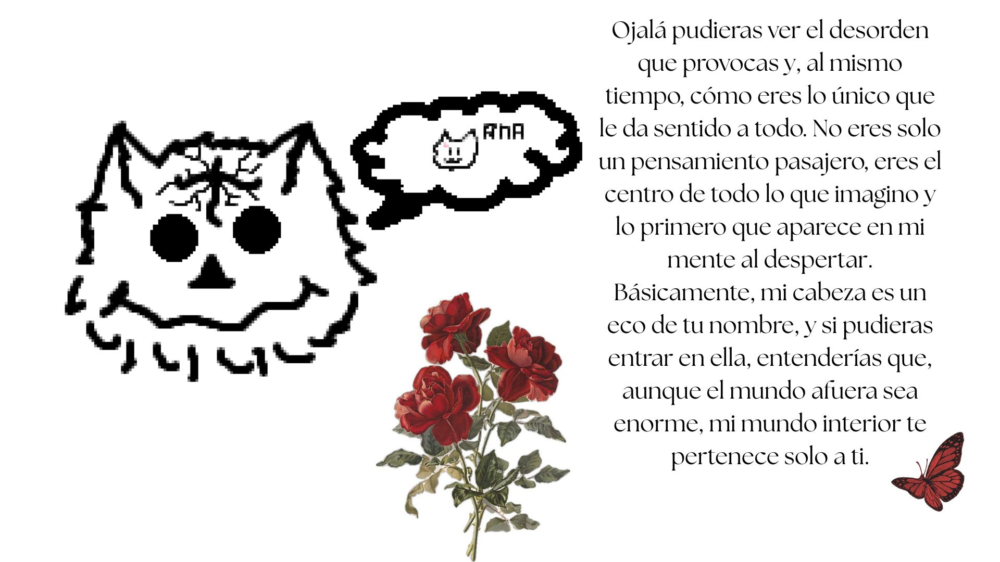

Le Fisher • Hay Un Dinosaurio
Letra: Y me perdí En tu brillo opalina me perdí Y la forma de tus labios me aprendí No me digas que es extraño Que tú seas todo lo que yo pedí Y te seguí Sin pensar que fuera raro te seguí Y bajo el calor de mayo entendí Que habían tantas cosas Pero sólo te quería junto a mí Fiché Fiché Tengo ganas de robar La luz de la ciudad Y dejarle a nuestra luna el que será Fiché Fiché Tanto miedo de pensar Que te digo la verdad Y que tal vez tu ya nunca volverás Te doy mi libertad Tu manera al caminar Esos gestos al hablar Y las cejas que ya no puedo olvidar Fiché Fiché Tengo ganas de robar La luz de la ciudad Y dejarle a nuestra luna el que será
♥ Habre mi cabeza ♥
